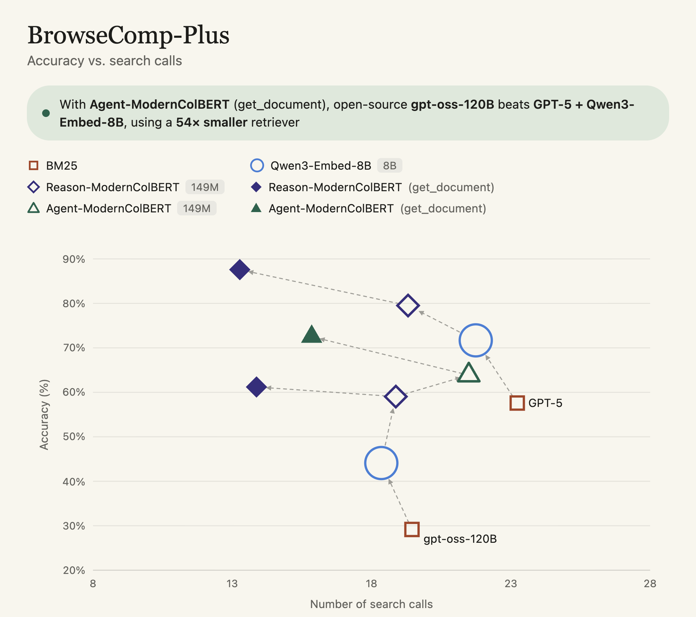

retrieval
Agents have (Information) Needs
Information retrieval is about satisfying an information need, but a query is a poor stand-in. Your agent is capable of expressing one, so you should probably use it.
One thing that seems to get lost in the hubbub around harness design is why we give agents access to retrieval tools. We give agents retrieval tools so they can satisfy some information need.
A sufficiently persistent user, given access to even basic tools, will be able to satisfy their information need through repeated querying and refining.
Recent work like Direct Corpus Interaction (DCI) [1] shows that agentic retrieval systems can do a pretty good job of finding things with just grep and bash.
(It just happens to take 2x the number of queries.)
What does it mean that an agent has an information need? The idea of information need is an old idea in information retrieval: when you go to execute a Google search, your query is just a compromise you have to make to satisfy your information need. What you’re actually searching for is your information need, which is latent in your mind:
A good example of “information need” comes from old-school TREC queries. They were called “TDN” queries, for “Topic, Description, Narrative.” The queries include a long-form description of the key aspects of the topic, and a narrative describing relevant documents.
Here’s an example from the TREC 1999 Ad Hoc dataset [2].
<title> osteoporosis
<desc>
Find information on the effects of the dietary intakes
of potassium, magnesium and fruits and vegetables as
determinants of bone mineral density in elderly men
and women thus preventing osteoporosis (bone decay).
<narr>
A relevant document may include one or more of the
dietary intakes in the prevention of osteoporosis.
Any discussion of the disturbance of nutrition and
mineral metabolism that results in a decrease in
bone mass is also relevant.
Agents similarly have an information need they’re seeking to satisfy when they issue and refine queries.
When you ask an agent “will fruits and vegetables help with my osteoporosis,” and it starts searching for osteoporosis fruits and vegetables and bone density vegetables, it’s issuing and refining queries to satisfy some information need.
But those queries are a compromise. They are a retrieval-system-friendly representation of the actual information need. The agent can infer a lot more about the user’s information need, like the fact that they’re asking for personal health, probably wants actionable information, etc.
A BRIGHT Idea
At some point the retrieval community agreed to not use the Descriptions or Narratives. But what if we just… let the agent express their own information need? And used that to inform our search?
BRIGHT
BRIGHT is a “benchmark for reasoning-intensive retrieval,” where traditional lexical retrievers don’t perform well. Consider the LeetCode examples in BRIGHT: find problems whose solutions share an algorithm with this sample problem.
This is, in my opinion, one of the key results from BRIGHT [3] and subsequent work. From the paper:
And follow-on work, like Reason-ModernCOLBERT from Antoine Chaffin [4] or Reason-IR [5] shows that we can actually build this right into our retrieval system! By training the retrieval system with reasoning data in the queries, and using that reasoning data in the harness, you see pretty substantial gains in agentic retrieval performance:

Basically, a 10%+ bump on BrowseComp-Plus, an agentic retrieval benchmark, by using a retriever that allows the agent to express its information need.
What does this look like? Well, an awful lot like a TDN query! Here’s the prompt the BRIGHT authors used to elicit reasoning
(1) Identify the essential problem in the post.
(2) Think step by step to reason about what should be included in the relevant documents.
(3) Draft an answer.
Your harness can prompt not only for the “query,” but for the reasoning behind the query, and what makes an effective document. Reasoning-ModernColBERT and Agent-ModernColBERT show that this can provide wins over simpler search tools. DCI showed that agents can execute long-horizon search tasks to satisfy information needs. But if we account for those information needs to begin with, we can get better retrieval – and results!
References
- Zhuofeng Li, Haoxiang Zhang, Cong Wei, Pan Lu, Ping Nie, Yi Lu, Yuyang Bai, Shangbin Feng, Hangxiao Zhu, Ming Zhong, others. (2026). Beyond Semantic Similarity: Rethinking Retrieval for Agentic Search via Direct Corpus Interaction. arXiv preprint arXiv:2605.05242.
- Ian Soboroff. (2024). TREC 1999 Adhoc Dataset. National Institute of Standards and Technology. https://doi.org/10.18434/mds2-3620
- Hongjin Su, Howard Yen, Mengzhou Xia, Weijia Shi, Niklas Muennighoff, Han-yu Wang, Liu Haisu, Quan Shi, Zachary Siegel, Michael Tang, others. (2025). Bright: A realistic and challenging benchmark for reasoning-intensive retrieval. International Conference on Learning Representations.
- Antoine Chaffin. (2025). Reason-ModernColBERT. https://huggingface.co/lightonai/Reason-ModernColBERT
- Rulin Shao, Rui Qiao, Varsha Kishore, Niklas Muennighoff, Xi Victoria Lin, Daniela Rus, Bryan Kian Hsiang Low, Sewon Min, Wen-tau Yih, Pang Wei Koh, others. (2025). Reasonir: Training retrievers for reasoning tasks. arXiv preprint arXiv:2504.20595.